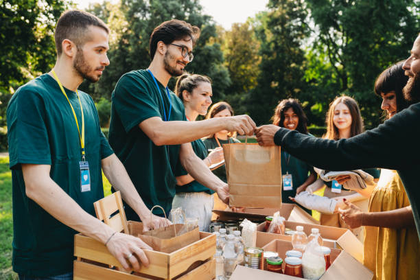
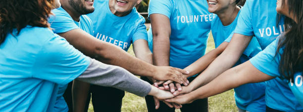
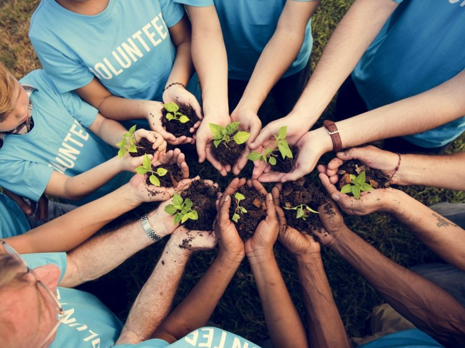

Construyendo bienestar y esperanza para las comunidades

Una organización que trabaja desde el territorio
Somos una entidad sin ánimo de lucro dedicada al fortalecimiento del bienestar integral, la salud comunitaria y el desarrollo social en Colombia desde 2014.
- Procesos de transformación social en zonas urbanas y rurales
- Metodologías simbólicas, narrativas y sistémicas
- Articulación con instituciones públicas y privadas
- Intervenciones con enfoques diferenciales y territoriales
Lo que nos mueve y hacia dónde vamos
Misión
Promover el bienestar integral y la salud comunitaria mediante procesos educativos y psicosociales que fortalezcan capacidades individuales, familiares y colectivas.
Visión
Para 2030, ser referente nacional en procesos comunitarios innovadores que integren salud, educación, arte y participación para transformar realidades sociales.

¿Con quiénes trabajamos?
- Niñas, niños y adolescentes
- Familias y cuidadores
- Mujeres y comunidades diversas
- Docentes y equipos educativos
- Profesionales de salud mental
- Comunidades rurales y urbanas
- Gestores sociales y territoriales
Nuestro propósito institucional
La Fundación tiene como objeto la prestación integral de servicios de salud, promoción, prevención, diagnóstico, tratamiento y rehabilitación; así como el desarrollo de proyectos sociales y comunitarios, programas educativos, actividades de bienestar, prevención de violencias, capacitación, consultoría, mantenimiento biomédico y articulación con entidades públicas y privadas.
La fundación desarrolla intervenciones en salud mental, salud sexual y reproductiva, nutrición, bienestar emocional, prevención de violencias y fortalecimiento del desarrollo humano, incorporando metodologías basadas en evidencia, enfoques diferenciales y estrategias territoriales de atención primaria en salud.
